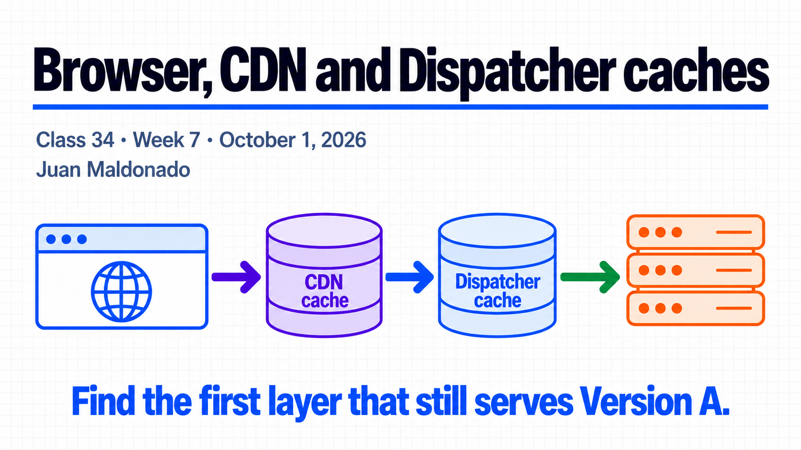
30-minute agenda
| Time | Slides | Focus |
|---|---|---|
| 0–5 | 1–2 | Three cache decisions. |
| 5–13 | 3–5 | Headers and browser evidence. |
| 13–21 | 6–9 | CDN logs, privacy, query and clientlibs. |
| 21–28 | 10–11 | Diagnose B, B, A. |
| 28–30 | 12 | Questions. |
The Spanish guide includes a simulated log, evidence sheet and answers. Local Dispatcher Tools do not reproduce the managed CDN.
Complete slide deck
Copy each numbered PNG to PowerPoint or download it below.

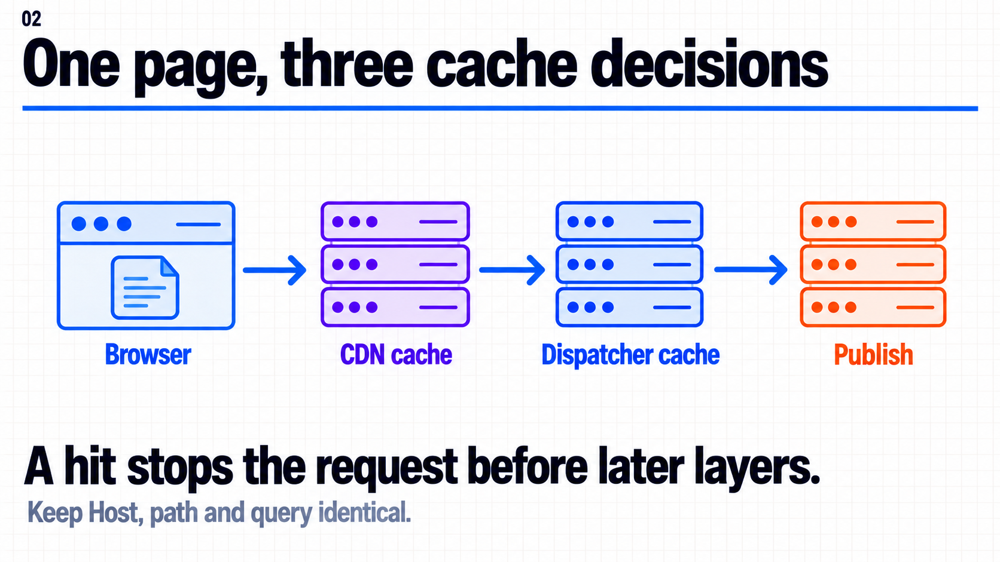

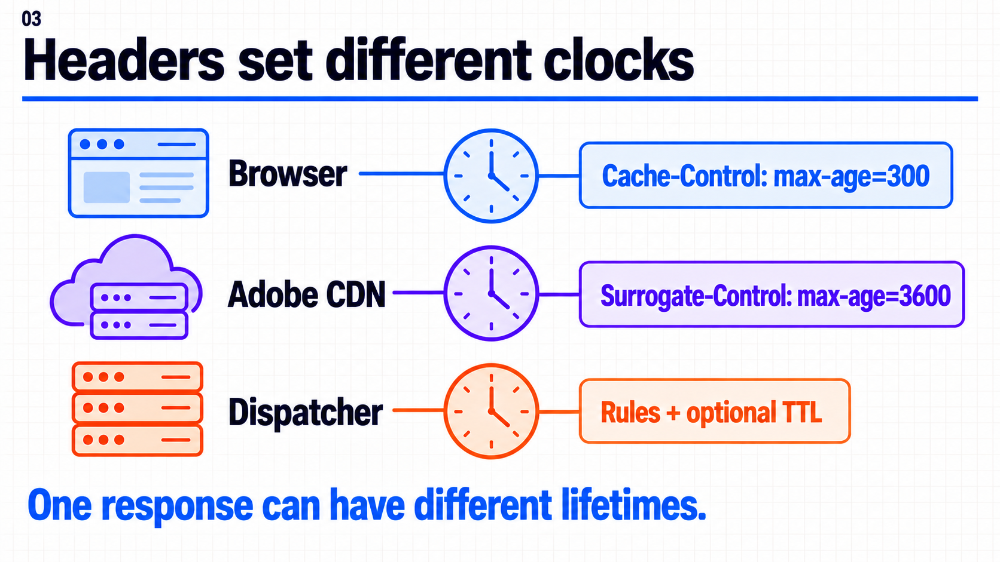

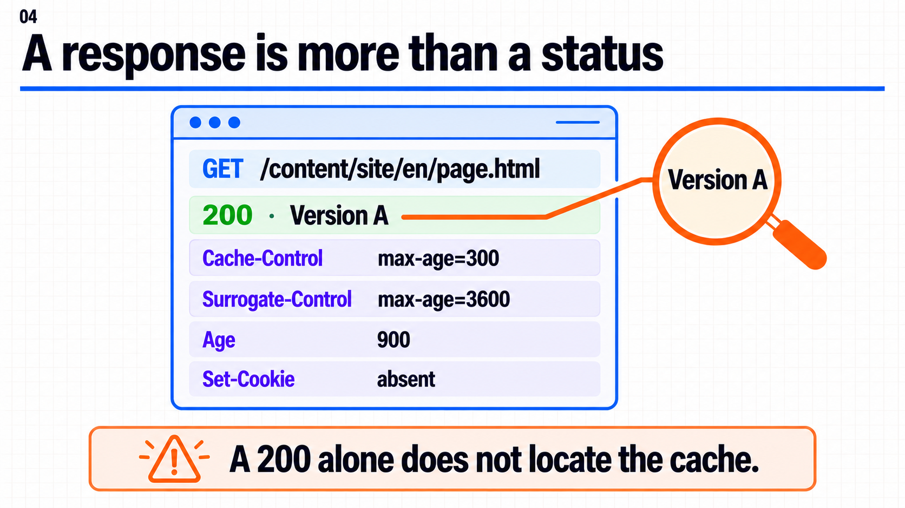

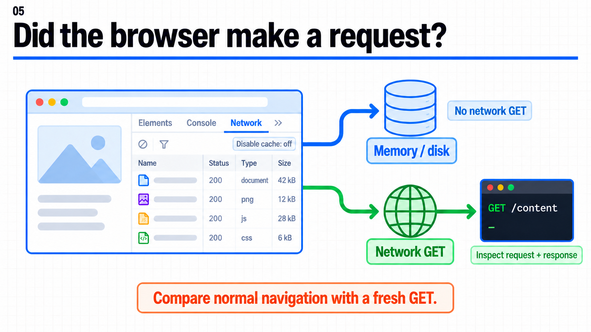

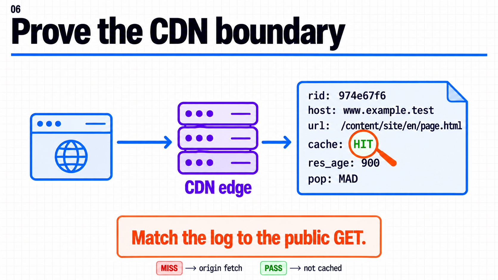

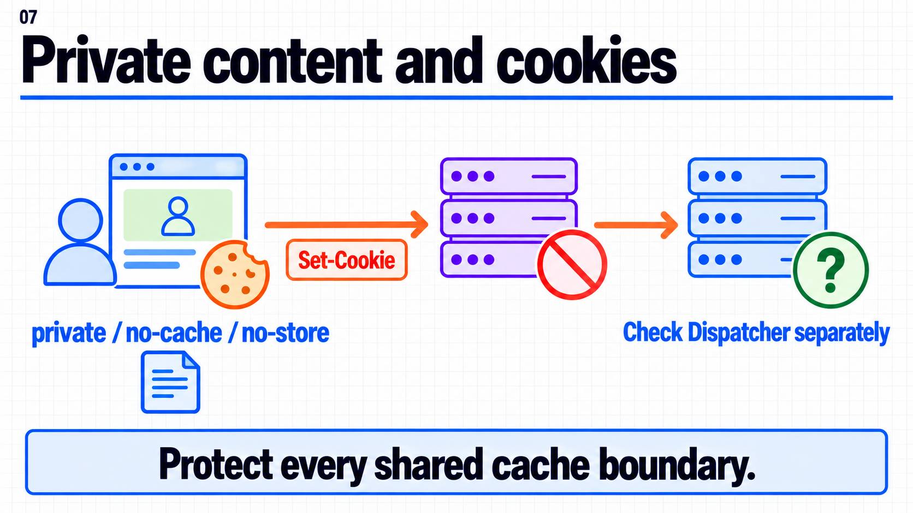

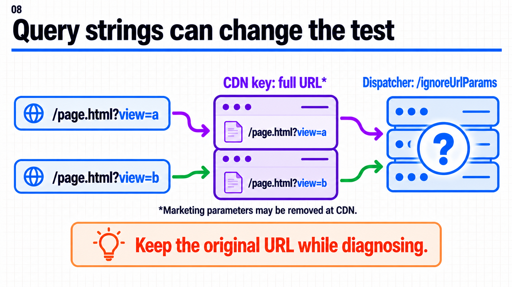

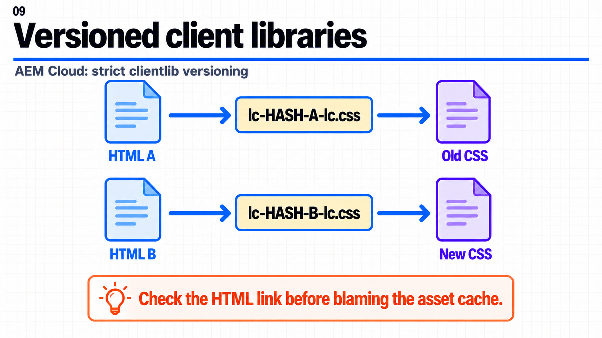

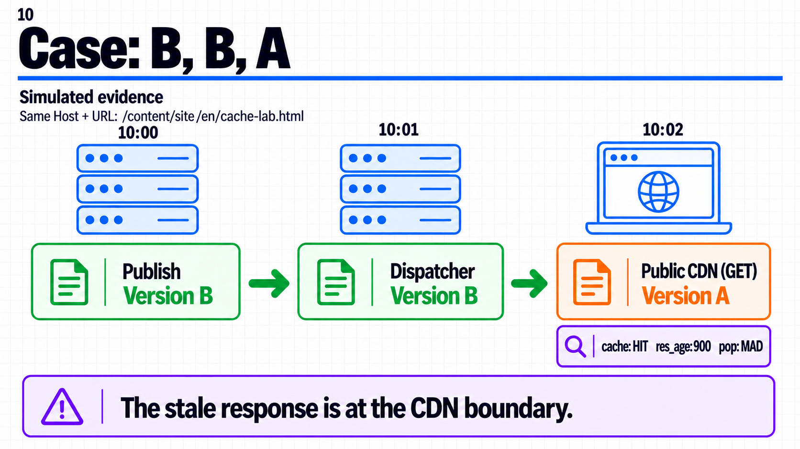

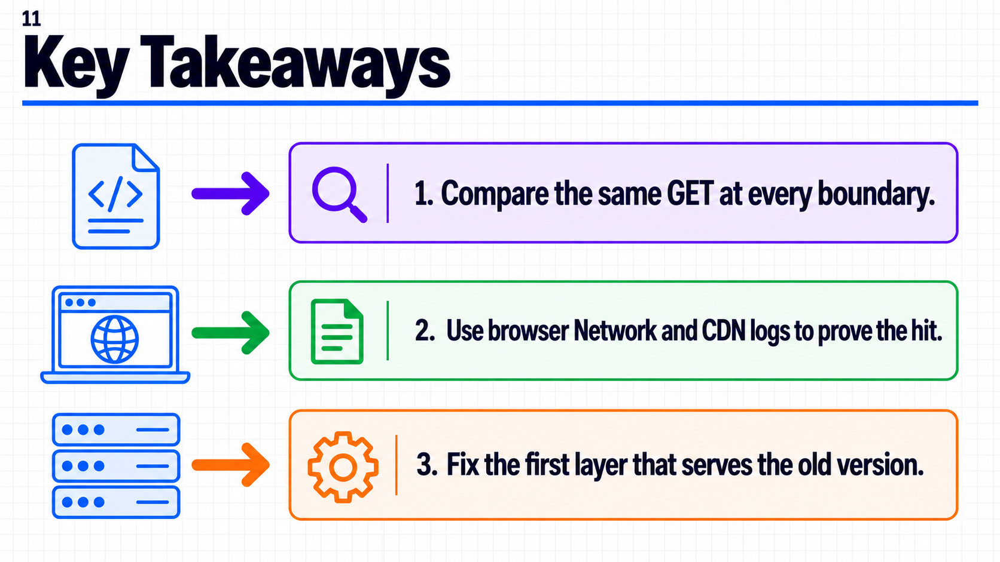

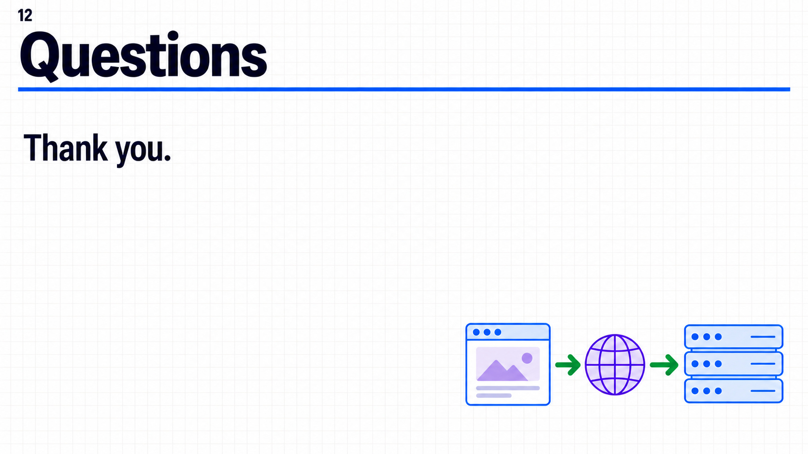